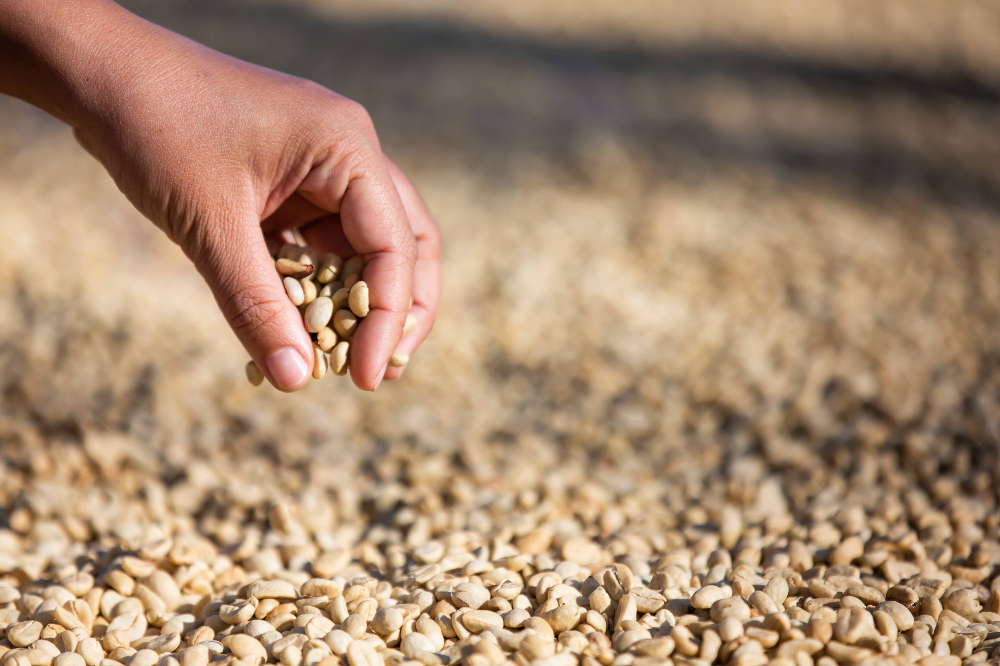

[James ' Coffee]
YOU HAVE HEARD OF CIVET COFFEE
BUT HAVE YOU HEARD OF HUMAN COFFEE?

We handpicked coffee beans from human discharge, absolute quality with the human touch.
Prepare to fall in love with the scent of humanity.
We offer a selection of aromas like "Your ex", "Your mom" and even "Your favorite uncle Bob".
Enjoy the nostalgic flavor of family.